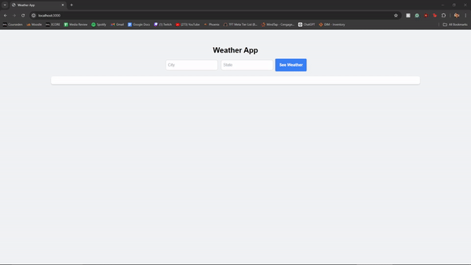

Weather App
This weather app allows users to input a city and state to get the current weather information. Below is a GIF demonstrating the app in action.

Overview
The Weather App project deepened my understanding of API integration and key management, backend development with Node.js and Express, frontend development and styling with Tailwind CSS, and data handling and display.
Key Learning Outcomes
- API Integration and Key Management
- Backend Development with Node.js and Express
- Frontend Development and Styling
- Data Handling and Display
- Project Setup and Version Control
- Problem-Solving and Debugging
Technologies Used
- Node.js
- Express.js
- Fetch API (node-fetch)
- Tailwind CSS
- HTML/CSS
- JavaScript
This project was a valuable learning experience, allowing me to apply theoretical knowledge in a practical setting. It improved my understanding of full-stack development, from setting up a backend server to creating a polished frontend interface.